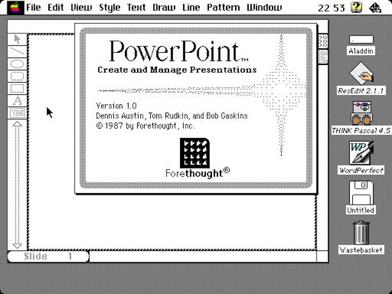
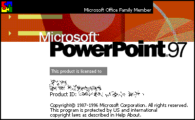
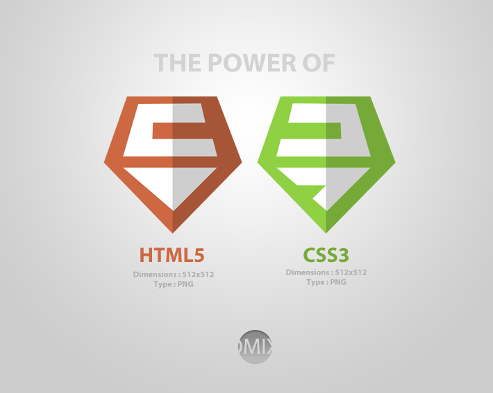

Il tuo browser non supporta le funzionalità richiest da impress.js, quindi stai vedendo una versione semplificata della presentazione.
Per una migliore esperienza installa una versione recente di Chrome, Safari o Firefox
Sono oltre 20 anni che esistono software per realizzare delle presentazioni digitali da proiettare su uno schermo.

La Microsoft è riuscita a definire uno standard de facto, ossia a far diffondere il proprio formato e a renderlo di fatto il più utilizzato.

A che costo ?
A che Costo?
- Utilizzare il sistema operativo Microsoft Windows
- Avere dei computer abbastanza potenti da far girare l'ultima versione di Office
- Rinunciare agli effetti di transizione o alle animazioni, quando la presentazione viene vista su un altro pc che potrebbe non avere la stessa versione di PowerPoint
- Dover pagare la "tassa" alla Microsoft
In questi anni si è evoluto lo standard HTML, il CSS e il JS

sfruttiamone le potenzialità con:
impress.js*
Si può includere facilmente una mappa interattiva
Si può inserire un video
Si può costruire un cubo
Si può utilizzare uno spazio infinito
per costruire una presentazione, cambiando prospettiva ...
Puoi presentare grandi idee
semplicemente Posizionandoli, Ruotandoli e scalandoli in uno spazio infinito
il limite è nella tua creatività
Puoi condividere con un link
E usarlo come base per un altra presentazione